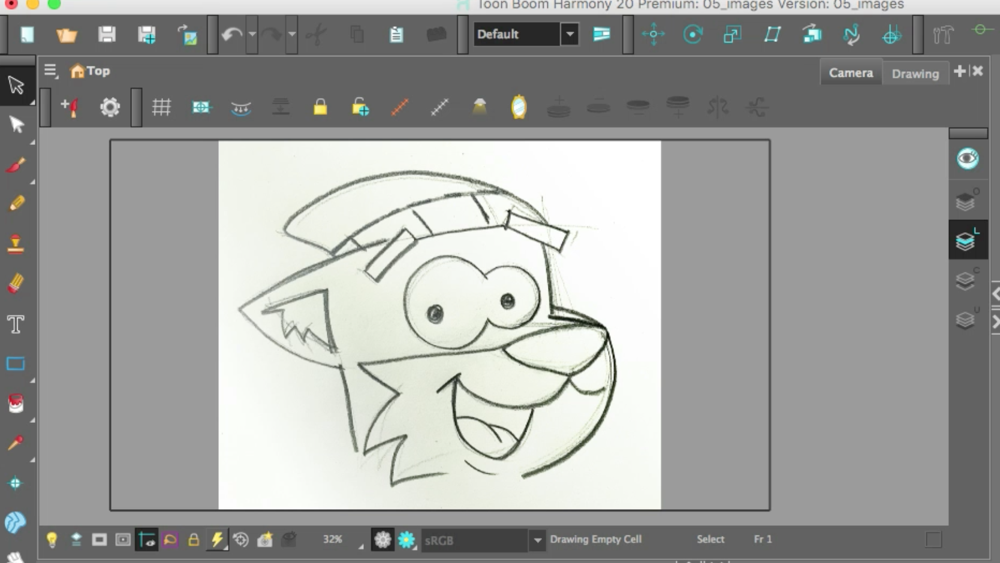
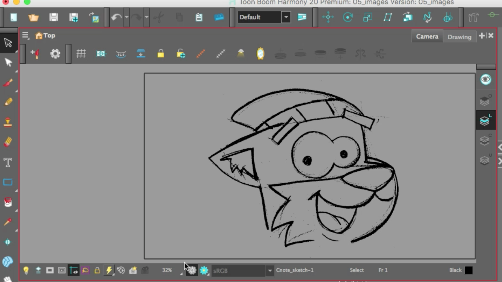
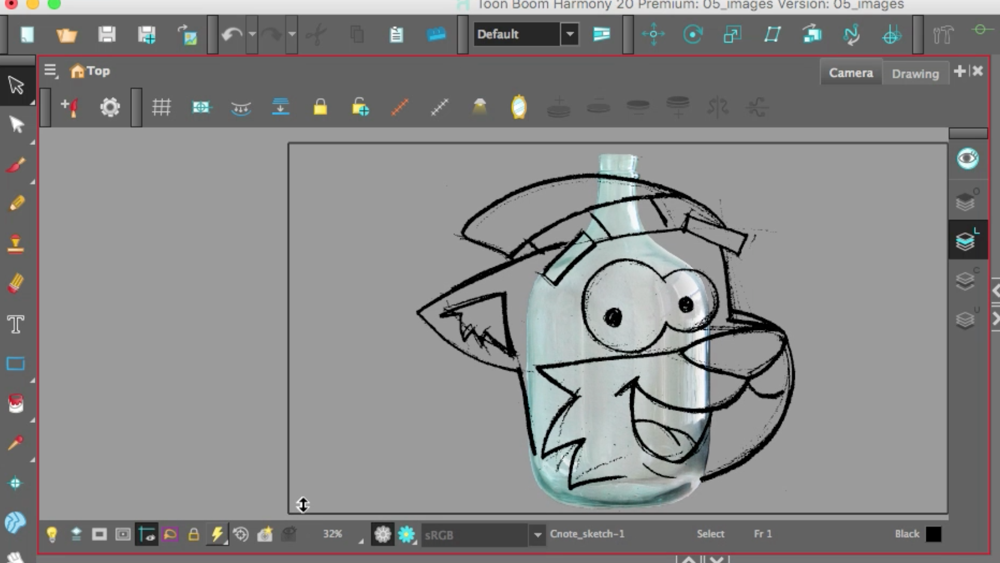
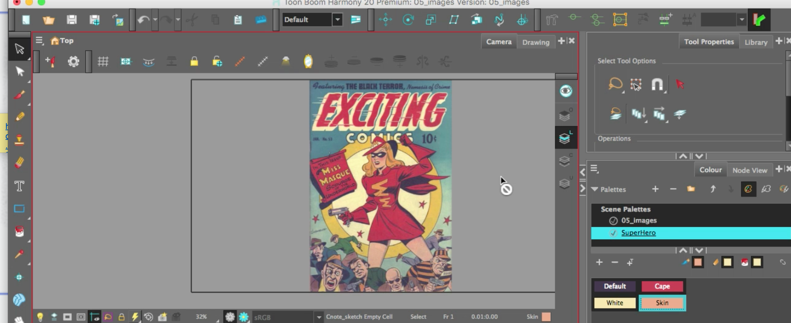

About this Lesson:
By default, Harmony works with vector images created within its own interface. Vector images are primarily composed of information about the different shapes composing the images, as well as their line and fill colours. This makes them easy to edit and paint, and allows us to resize them without affecting the image quality. In contrast, bitmap images are composed of colour information about each individual pixel composing the image. Hence, they are more fit for very detailed or realistic pictures, but they cannot be scaled without losing image quality.
Typically, you would need to work with bitmap images if you must create some of your scene assets, such as backgrounds or props, in a different software. You can then import those bitmap image files into your Harmony scene.
When importing a bitmap image, you must decide how must process it. You can choose between the following options:
- Import as Bitmap: This imports the image exactly as is and ensures that it cannot be modified when working on the scene. This is useful for using backgrounds that were created in different software in your project.
- Vectorize: Converts a bitmap into Toon Boom vector art, which can easily be painted and edited using Harmony's vector drawing tools. This can be useful for importing line art scanned or created using a different software.
Lesson Duration: 1 hour
Harmony Topics:
- Keep as Original Bitmap: This imports the image exactly as is and ensures that it cannot be modified when working on the scene. This is useful for using backgrounds that were created in different software in your project.
- Importing Bitmap Images as Toon Boom Vector Drawing: You can import bitmap images as vector drawings, which allows you to edit them using Harmony's vector drawing tools. This is especially useful to convert bitmap line art scanned or created in a different software into vector line art so it can be painted in Harmony.
- Importing Bitmap Images as Toon Boom Bitmap: Importing a bitmap image as Toon Boom bitmap preserves its original detail, but allows the user to modify them using Harmony's bitmap drawing tools. Vectorize Image option
-
- Colour: Imports bitmaps as vector objects with their image as a bitmap texture. The resulting drawing can be drawn or erased over, but not repainted or tweaked.
- Black and White: Vectorizes drawings with a solid black line. This creates a 100% vector-based drawing and paints it with the Vectorized Line colour swatch from your scene's palette.
- Threshold - Determines what values in the scanned image will be considered as part of the drawing, and what will be ignored and eliminated in the vectorized drawing. The lower the value, the darker the image and vice versa.
- Smooth - Determines how smooth the lines will be. The lower the value, the more detail will be retained. The higher the value, the more polished and easy to edit the lines will be.
Task:
-
Download the support files from the Lesson Files.
-
Watch and take notes on the Importing Images video (above) and the topics presented in this lesson.
-
Download and take notes on the Bitmap vs Vector.pdf in the Lesson Files.
- Review assessment rubric in the Lesson Files before submitting your work.
-
Launch Toon Boom Harmony.
-
In the Welcome Window, create a new scene called: Importing_Images
-
Browse and set the location to your Document Folder.
-
Keep the Camera Size at the default HDTV_1080p24 1080p (1920 by 1080 pixels and the frame rate is 24 frames per second)
-
Click Create Scene
-
Go to Harmony's main menu. Select File/Import/Images.
- Browse and find the CNote_sketch.jpg in the support folder you downloaded.
- Click Open.
- In the Import Image window select the following:
- Create a Layer(s)/Create Single Layer Named
- In Import Images, keep as Original Bitmap
- Set the Alignment to Fit. Note that the option of Pan may extend the image beyond the Camera View, and and Project Resolution will bring in image as full size of image.
- Leave the Transparency Alpha as Premultiplied with White as jpg files do not have transparency embedded.
- Click Ok.
- Disable the visibility of the imported image layer in your timeline.

Hint: Please make sure your images are clean before importing images into Harmony
Part 2 - Converting Images into Toon Boom Vector Drawings:
-
Go back to Harmony's main menu. Select File/Import/Images.
- Browse and find the CNote_sketch.jpg again.
- Click Open.
-
This time we are going to convert the image into a Toon Boom Vector Drawing. To do this, go to the Import Options and select Toon Boom Vector Drawing.
-
In the Vectorization area select Black and White.
-
Click Ok.
- Notice there is no white background (like in part 1).

Part 3 - Import PNG images:
-
Go back to Harmony's main menu. Select File/Import/Images.
- Browse and find the glass-bottle.png.
Hint: png images can have transparent backgrounds, unlike jpg images. The Glass bottle image has a transparent glass bottle in it.
- Click Open.
- In the Import Image window select the following:
- Create a Layer(s)/Create Single Layer Named
- In Import Images, keep as Original Bitmap
- Set the Alignment to Fit.
- Set the Transparency Alpha as Straight. This will make the image import with like a layer in Photoshop.
- Reposition the Glass layer to the top of your Timeline

Part 4 - Import an image to create colour palette:
-
Go back to Harmony's main menu. Select File/Import/Images.
- Browse and find the pub_domain_comic.jpg.
- Click Open.
- In the Import Image window select the following:
- Create a Layer(s)/Create Single Layer Named
- In Import Images, keep as Original Bitmap
- Set the Alignment to Fit.
- Click Ok
- Go to the Colour View.
- Create a new Palette and name it superhero.
- Double click the black swatch.
- Select the Eyedropper in the Colour Picker window.
- Rename the swatch Black.
- Select the black colour on the comic art.
- Add a new swatch, select the white in the comic art. Label it White.
- Repeat to create 2 more swatches:
- Pink - Skin
- Red - label it Cape
- Close the Colour Picker window.

Hint: It is essential that you name your swatches according to the objects they are used on in your scene.
- Take a screenshot of your entire Harmony User interface (workspace) showing your new Colour view/palette, layers in your Timeline and art in the Camera View.
- Submit your screenshot.